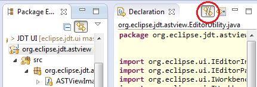

if statement that can be safely inverted to an early return, so that you can ignore the code that follows, and make it easier to understand?
Now, you can just use a Quick Assist (Ctrl+1) on the if statement to do this refactoring:



At the same time, our good old friend org.junit_3.8.2 has been retired, and the org.junit4 compatibility bundle
has also been removed. Your Require-Bundle: entries should just point to
org.junit;bundle-version="4.11.0" (or an earlier version, if you like).
Note that JUnit 4 still contains the JUnit 3 APIs. If you need org.junit_3.8.2 back for whatever reason, you can still get it from Orbit.
org.eclipse.jdt.launching.libraryLocatonResolvers
that you can use to contribute location information for non-standard JRE / JDK libraries. For example,
this extension point can be used to provide Javadoc and source locations for JARs in the ext location
of a JRE.
Extenders must provide an implementation of org.eclipse.jdt.launching.ILibraryLocatonResolver
which can provide package roots, source paths, Javadoc locations and index locations for a library.
The Ant tasks produce reports based on a reference baseline and a profile. Previously both the baseline and the profile had to describe complete products. Any bundle that had resolver errors due to missing dependencies would be skipped. Now these bundles will be processed.
Resolver errors can affect the results, therefore a list of resolver errors is included in the XML output
and warnings are added to the HTML report. To return to the old behavior of skipping
unresolved bundles, you can set processunresolvedbundles="false" on your Ant task.